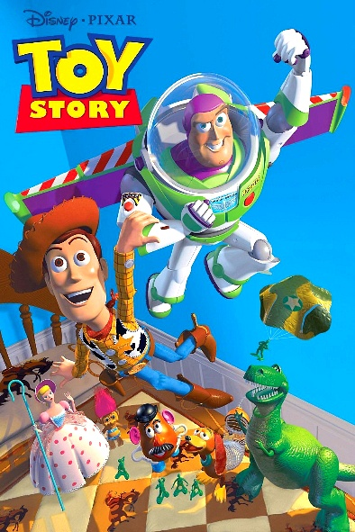
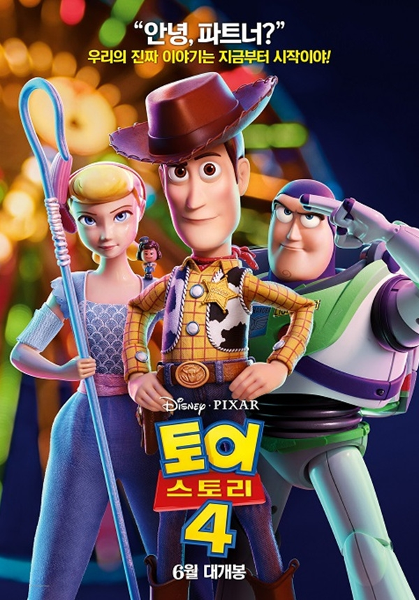

|  |
토이스토리 1
카우보이 인형 우디는 앤디가 가장 아끼고 사랑하는 장난감이다. 그는 앤디의 수많은 장난감들의 리더 역할을 맡으면서 그들을 날마다 이끌고 진두지휘하며 모든 장난감들 역시 그를 따른다. 그러던 어느날 앤디의 생일파티가 열리고 앤디는 버즈 라이트이어라는 새로운 신제품 장난감을 선물로 받는다. 버즈는 우주를 수호하며 평화를 지키는 우주특공대원 전사 장난감으로 최첨단 장비들과 수납식 날개, 개폐식 헬멧, 디지털 녹음된 음성 지원, 레이저 발사 등을 가지고 있다. 앤디가 가장 좋아하는 장난감 1위는 순식간에 우디에서 버즈로 바뀌게 되고, 다른 장난감들도 우디보다 버즈를 더 따르게 되며 우디는 하루아침에 2인자로 전락한다. 우디는 자신의 자리였던 앤디가 최고로 아끼는 장난감 1인자 자리와 모든 장난감들의 대장자리를 모두 빼앗아 버린 버즈를 시기하고 질투하며 자신이 진짜 우주전사라고 믿는 버즈에게 넌 그냥 장난감일 뿐이라며 면박을 준다.
앤디네 가족이 이사를 가기 이틀 전 우디는 앤디가 피자 혹성에 갈 때 자신이 아닌 버즈를 데려가려 하자 질투심에 버즈를 벽과 선반 사이로 밀쳐내 버리려 한다. 그러다 실수로 버즈를 창 밖으로 떨어뜨리게 되고, 이로 인해 우디는 장난감들에게 질타를 받게 된다. 우디는 버즈를 구해 자신의 행동을 해명하고자 했지만 모종의 사고로 얼떨결에 장난감들을 마구 고문하여 작살내 버리거나 폭파시켜 버리는 옆집에 나쁜꼬마 시드에게 붙잡혀 장난감들의 지옥과도 같은 그의 집에 갇혀버리고 마는데...
|
 |
토이스토리 2
앤디가 카우보이 캠프에 간 동안 앤디의 어머니는 벼룩 시장을 열고 앤디의 장난감 중 쓸모없는 물건들을 팔기 위해 앤디의 장난감 몇가지를 현관 앞뜰에 전시한다. 하지만 그중에서 앤디의 친한 친구인 펭귄 위지가 팔려가게 될 운명이 되자 어깨 부상을 입은 우디는 그를 구하러 간다. 그러나 우디는 앤디의 집앞을 지나던 토이 수집광 알에게 발견되어 그에게 잡혀가고 만다. 시내에 대형 토이숍을 갖고 있는 알은 1950년대에 방영됐던 TV 프로 ‘우디의 가축몰이’에 나왔던 장난감들을 수집하던 중이었으며, 너무나 희귀하여 찾기가 힘들었던 카우보이 장난감 우디까지 손에 넣자 일본에[4] 장난감 박물관을 열려는 사업가에게 팔아 넘기려고 그를 집으로 데려온다.
그의 집에서 우디는 몇 년 동안 자신을 애타게 기다리고 기다리며 언제나 박물관에 갈 날만을 손꼽아 기다리던 카우걸 제시와 광부 인형 프로스팩터 스팅키 피트, 그리고 TV 시리즈에서 우디가 타고 타닌 애마 불스아이를 만나게된다. 그들은 우디가 오자 드디어 꿈에 그리던 그날이 왔다면서 큰 감격에 환희에 젖어 아주 기뻐한다. 우디와 제시 스팅키 피트 불스아이가 한세트로 모여야 박물관에 전시할 수 있는데, 우디가 없어서 전시를 미루다가 드디어 알이 우디를 찾아내어 카우보이 박물관에 전시할 수 있게 된 것이다. 한편 버즈는 알의 자동차 번호판에서 그의 가게와 집주소를 파악하여 앤디의 장난감들을 이끌고 우디를 구출하기 위한 험난한 여정을 떠나게 되는데......
|
 |
토이스토리 3
어른이 된 대부분의 사람들이 그렇듯이 더 이상 우디와 버즈를 비롯한 모든 장난감을 가지고 놀지 않게 되어, 그들은 몇년째 상자안에만 갇혀지내고 있다. 앤디가 고등학교를 졸업하여 대학에 진학, 집을 떠나게 된 앤디는 장난감들을 위에 다락방에 넣으려고 했지만, 어머니의 실수로 쓰레기차에 버려질 뻔하다가 다행히 써니사이드(햇빛 마을) 탁아소로 가게 된다.
앤디가 자신들을 버렸다고 생각하는 장난감들은 어린이집에 들어가게 되고 거대한 음모와 마주하게 된다. 그러다 앤디가 자신들을 버리려고 한것이 아니었다는 사실을 알게 된 장난감들은 어린이집을 탈출하려고 한다.
|
|  |
토이스토리 4
시작은 9년 전부터 거슬러 올라간다. 토이스토리 2편에서 3편 사이 시점으로, 제시 등이 합류했고 우디 일행과 보가 아직 앤디의 집에 있었을 때다.
갑자기 비가 쏟아지던 밤, 앤디가 서둘러 장난감들을 들고 집에 들어왔는데[1], RC카[2]를 깜빡 두고 왔는지 배수구에서 빗물에 휩쓸려가고 있었다. 이에 장난감들은 몰리의 방 창문을 통해 슬링키와 우디를 내려보내 구출해낸다. 이 때 아슬아슬하게 손이 닿지 않자 원숭이 장난감들[3]과 보 핍까지 거들고, 마침내 우디가 RC카를 잡는데 성공한다.
그런데 하필 그 시간이 바로 보 핍과 다른 장난감들이 팔려나가는 날, 즉 3편 초반에 언급되었던 보 핍과의 이별이었다. 가지러 왔던 남자가 차 키를 깜빡해서 다시 앤디의 집으로 돌아간 사이 우디는 상자를 열고 보 핍에게 같이 가서 숨어버리자고 하지만, 보 핍은 "나는 앤디의 장난감이 아니라 몰리의 장난감이야."라고 대답한다.[4] 즉 주인인 몰리가 필요없다고 한 이상 그걸 따르는 게 장난감의 숙명이라는 것. 하지만 이내 "아이들은 장난감들을 항상 잃어버려... 그리고 그 장난감들은 박스에 넣어져서 다른 곳으로 보내지기도 하지."라며 우디에게 함께 가자고 권유한다. 이에 우디도 마음이 흔들려 상자에 들어가려는데 그 순간 앤디가 비가 쏟아지는데도 뛰쳐나와 우디가 안 보인다고 찾는다. 이 목소리를 들은 우디는 남기로 한다.
보는 우디의 모자를 고쳐 눌러주며 서부극처럼 작별을 고하고 프롤로그가 마무리 된다. 보 핍이 담긴 상자를 싣은 차가 떠나는 동안 우디는 빗속에서 장난감처럼 드러누워 보 핍을 떠나보낸다.
|